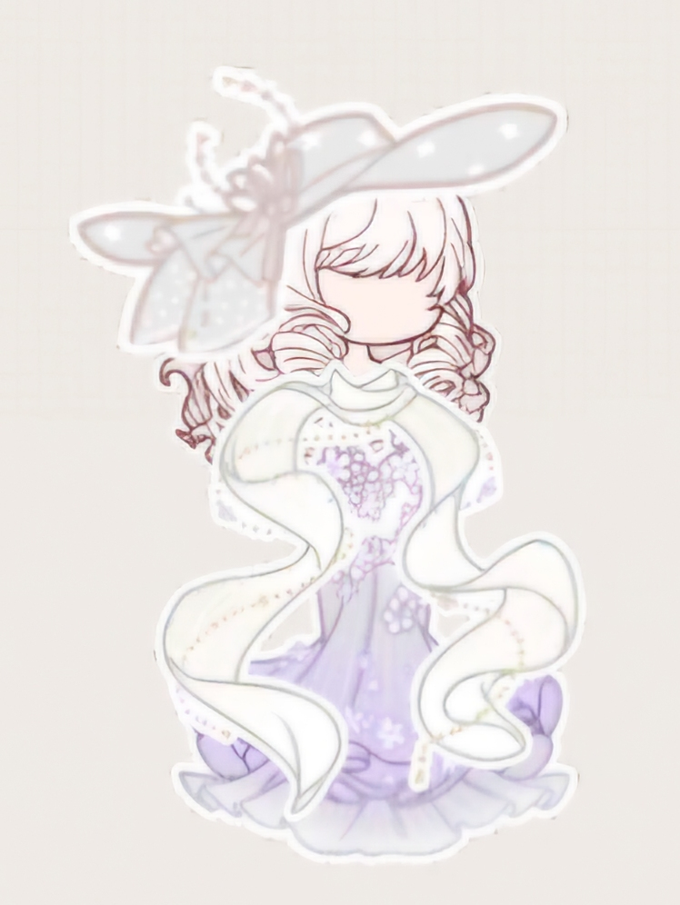

|  |
Võ Xuân Ngọc 12A4 - THPT Ngô Quyền Âm nhạcLana Del Rey, đặc biệt là những giai điệu trầm buồn và đầy cảm xúc.SáchHigashino Keigo, bị cuốn hút bởi những câu chuyện trinh thám sâu sắc và nhiều tầng ý nghĩa.Ước mơCó thật thật nhiều tiền |